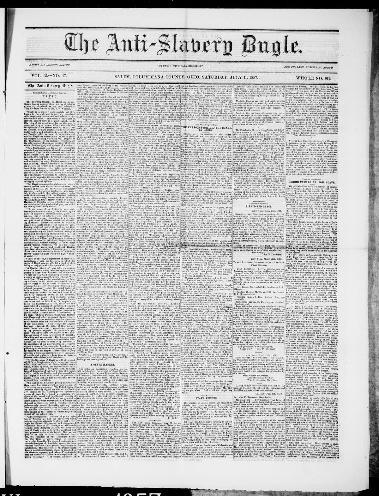

But we are glad to" be able to state that General
https://www.loc.gov/resource/sn83035487/1857-07-11/ed-1/?sp=1

See the original pageVer la página original
According to the Anti-Slavery Bugle, General Santana, the President of the Dominican Republic, was removed from office amid general satisfaction due to his promotion of American intrigues aimed at threatening Hayti's independence. His successor is M. Buenaventura Baez, a patriotic statesman previously banished by Santana, whose inauguration was met with public rejoicings and celebrations involving the Archbishop, the ex-President, and the Consuls of Spain, England, and France. Additionally, the excerpt notes that the Journal des Débats misrepresented the condition of Hayti, prompting a rebuke from the Haytian Minister at Court, Baron Camier.
A estar del Anti-Slavery Bugle, el general Santana, presidente de la República Dominicana, fue depuesto del mando entre el beneplácito general a causa de su complacencia con maquinaciones norteamericanas que amenazaban la independencia de Haití. Le sucedió Buenaventura Báez, estadista patriota desterrado antaño por Santana, cuya investidura se celebró con festejos populares en presencia del arzobispo, del expresidente y de los cónsules de España, Inglaterra y Francia. La pieza reseña asimismo que el Journal des Débats desfiguró el estado de Haití, concitando la réplica del ministro haitiano en la corte, barón Camier.
Where this standsEn qué punto está
The full text of this article is still being prepared. Until it is ready, this page carries a summary, the passage found on the page, and the link to the original, which is always one click away.El texto completo de este artículo aún se está preparando. Hasta que esté listo, esta página lleva un resumen, el pasaje encontrado en la página y el enlace al original, que siempre está a un clic.
From the original pageDe la página original
The passage where this article was found, copied from the newspaper page itself, reading errors and all. This is exactly what the summary above is based on.El pasaje donde se encontró este artículo, copiado de la propia página del periódico, con sus errores de lectura y todo. Esto es exactamente aquello en lo que se basa el resumen de arriba.
making insidious attempts to obtain such a foot
ing in the hitherto ill-governed and disorganized
republican State uf St. Domingo as will enable
them the more effectually to attack tho independ
enoe of Hayti, which is by far the wealthiest and
most powerful seotion of the island. But we are
glad to" be able to state that General Sunt
ana, the President pf the Dominican liepub
io, who; there is grave reason to believe,
had availed himself of his elevated position to pro
mote the intrigues of American agents, has been
removed, from offico amid general expressions of
satisfaction. His successor is M. pueoaventura
Baes, a patriotic statesman, whom be banished on
his elevation to power, and whose Presidentship
says the Journal dct Dcbalt, 'was inaugurated by
publio rejoicings.' 'The people,' cuutiuuos (he
same journat, 'repaired in a body to the residen
ces of tho Archbishop, the cx-Froident, General
Keglnmota, tho Consuls of Spain, England, and
r rnnco, whero spoechcs were dcliverod id celebra
tion of this propitious ovent.'
"We earnestly wish thnt the Journal des Debate
exhibited as intelligent on ncqunintnnub with the
state of Hayti rs it does with that of St. Domingo.
Hut the reverse is tlio fact; and to such an extent
has it misrepresented the condhiou l tlie former
(Ountry that the Bnron Cnmier, tho Haytian Min
ister At tills Court, felt hiinseif called upon to ad
minister a dignified rebuke to the unfair state
ments of the French journalist. In his reply ho
uade the following pertinent remarks
How to cite this articleCómo citar este artículo
Anti-Slavery Bugle. (1857). New-Lisbon, Ohio, July 11, 185711 de julio de 1857. DR in the American PressRD en la Prensa Norteamericana. Library of Congress, Chronicling America: https://www.loc.gov/resource/sn83035487/1857-07-11/ed-1/?sp=1
ReferencesReferencias
Library of Congress, Chronicling America: Anti-Slavery Bugle, July 11, 185711 de julio de 1857.
Send an observationEnviar una observación
Does this article connect with your family, your town, or something you know? Did we get something wrong? Write to us. Observations go to the editor's inbox and are read by a person.¿Este artículo conecta con su familia, su pueblo o algo que usted conoce? ¿Nos equivocamos en algo? Escríbanos. Las observaciones llegan al buzón del editor y las lee una persona.
Send observationEnviar observación